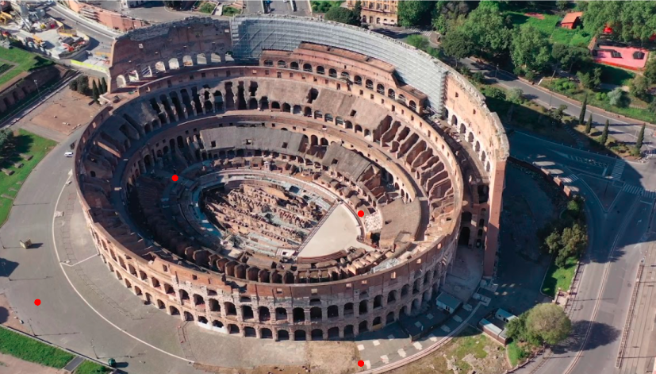

Il Colosseo, originariamente conosciuto come Amphitheatrum Flavium (in italiano: Anfiteatro Flavio) o semplicemente come Amphitheatrum, situato nel centro della città di Roma, è il più grande anfiteatro del mondo. In grado di contenere un numero di spettatori stimato tra 50 000 e 87 000 unità, è il più importante anfiteatro romano, nonché il più imponente monumento dell'antica Roma che sia giunto fino a noi.[1] Inserito nel 1980 nella lista dei Patrimoni dell'umanità dall'UNESCO, assieme a tutto il Centro storico di Roma, le Zone extraterritoriali della Santa Sede in Italia e la Basilica di San Paolo fuori le mura, nel 2007 il complesso, unico monumento europeo, è stato anche inserito fra le Nuove sette meraviglie del mondo, a seguito di un concorso organizzato da New Open World Corporation (NOWC).
L’azienda Tour Club Italiano vuole offrire ai propri clienti un esperienza rilassante dove poter ammirare il paesaggio ed i monumenti. I nostri partner sono selezionati e puntano ad offrire i migliori piatti della cultura del posto.
Touring Club Italiano consiglia ai visitatori i migliori posti per scattare le foto. Queste posizioni sono state scelte da Fotografi professionisti per scattare le foto che potete vedere su questa pagina
